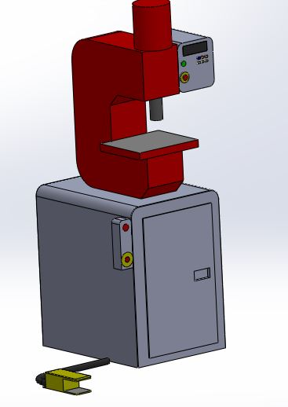

Prensa Hidraulica Multipropósito - Modelo PH 25

La prensa PH 25 se diseñó siguiendo normativas internacionales, con herramientas de cálculo y diseño de avanzada. Se incorporó desde un comienzo, tecnología de control bajo los estándares de la industria 4.0, pudiendo incorporarse a células o bien líneas de producción 100% automáticas.
Prensa Hidraulica Multipropósito - Uso Ejemplificado
Aquí se muestra uno de los usos que puede tener la Prensa Hidraulica Multipropósito. Perforar metales, independientemente de la dureza y el espesor.